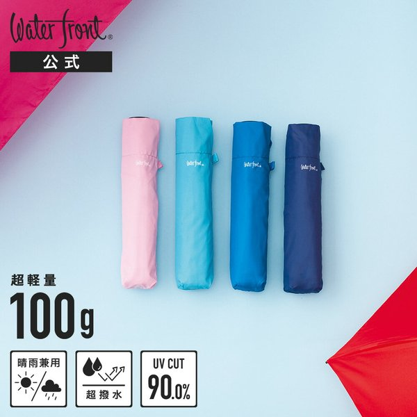
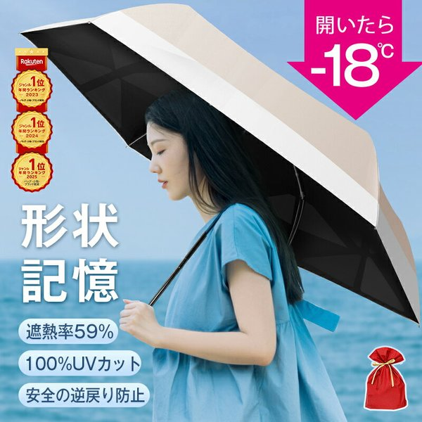
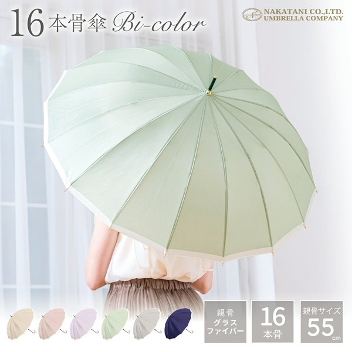
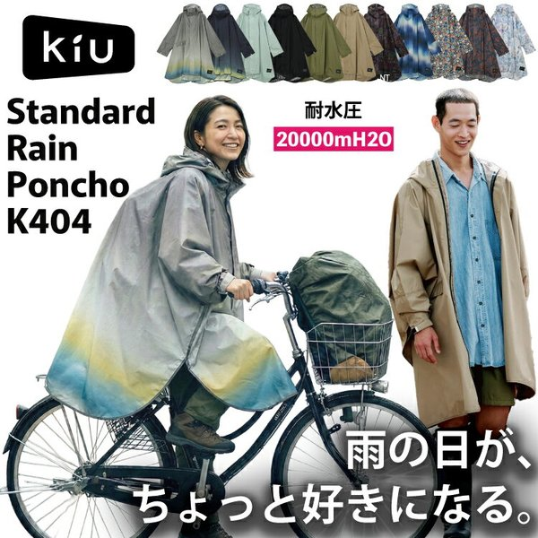
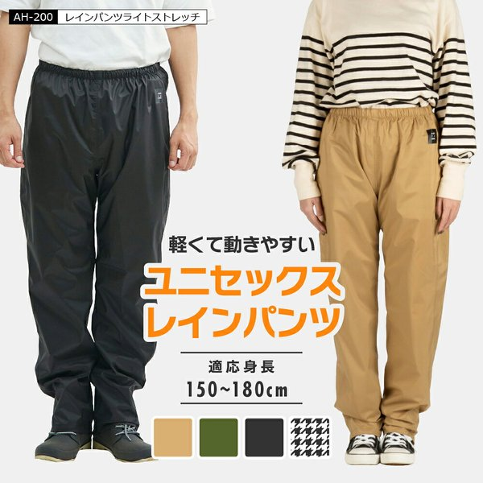
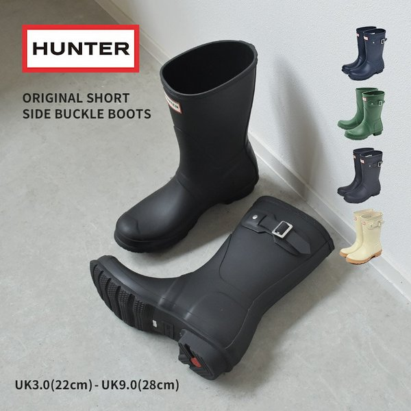
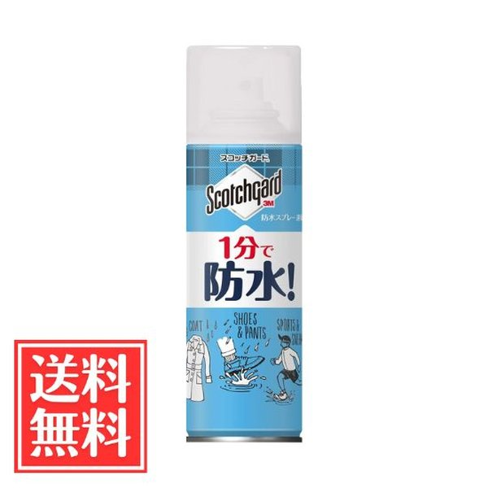
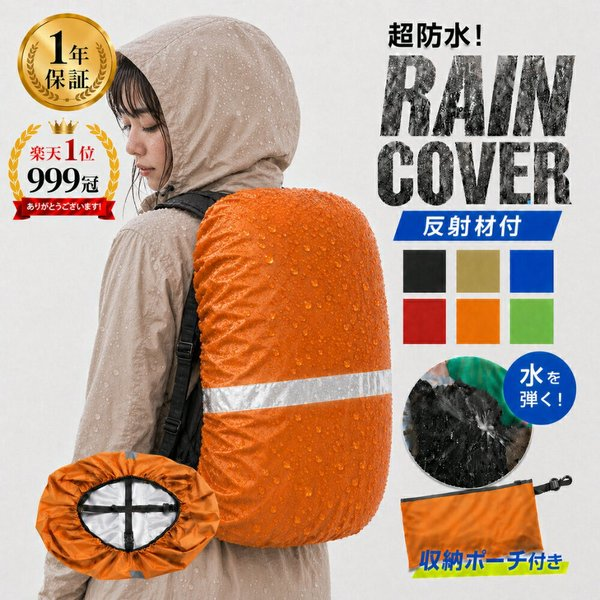
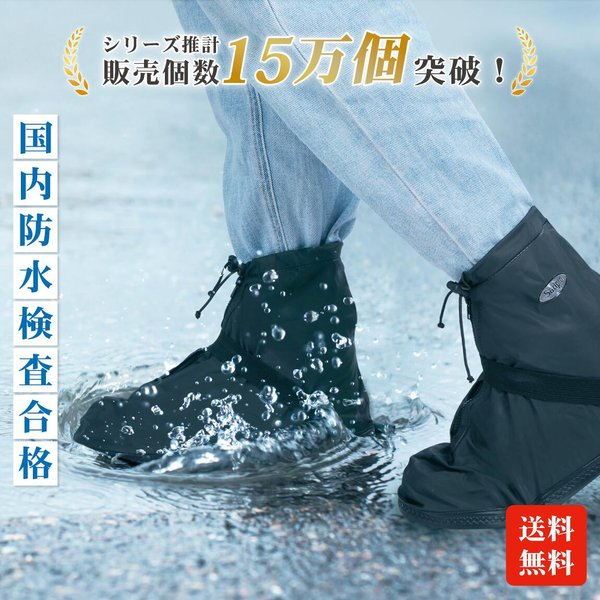

【2026年冬の雨対策】折りたたみ傘・耐風長傘・レインコート・防水スプレーおすすめ10選｜通勤・通学・自転車の雨の日を快適に
雨の日がつらいのは、濡れることより「準備していないこと」です。折りたたみ傘が重くて持ち歩かない、レインコートの裾がめくれる、靴がびしょ濡れになる。どれも道具で解決できる問題です。
揃える順番は3つ。まず傘。毎日持ち歩く折りたたみ傘は、100g台の軽さがいちばん大事です。車や自転車が多いなら、16本骨の長傘かポンチョを。次にレインウェア。自転車通勤なら耐水圧20,000mmクラスのポンチョ、歩き中心ならレインパンツだけ買い足すのが現実的です。最後に足元と荷物。シューズカバーとザックカバーがあると、濡れる面積がぐっと減ります。すでに持っている傘やコートは、防水スプレーで撥水を戻せば買い替えずに済みます。
本記事では、楽天市場で人気・高評価の雨の日の傘とレイングッズ10選を、実売価格とレビュー評価つきで写真付き紹介します。
- おすすめ10選 スペック・特徴比較表
- BEST 1｜ビニール傘 16本骨 プラスティックパイピング 長傘
- BEST 2｜NEW 極軽カーボン 折りたたみ傘（約100g）
- BEST 3｜形状記憶 折りたたみ傘 完全遮光（240g）
- BEST 4｜16本骨 晴雨兼用 長傘 バイカラー
- BEST 5｜スタンダード レインポンチョ 2ND K404
- BEST 6｜レインパンツ AH-200（軽量ストレッチ）
- BEST 7｜オリジナル ショート サイドバックル レインブーツ WFS1000RMA
- BEST 8｜スコッチガード 防水スプレー 速効性 170ml
- BEST 9｜ザックカバー レインカバー（十字ベルト・収納袋付き）
- BEST 10｜レインシューズカバー（国内防水検査合格）
- 【読者負担0円】買わなくても得する無料サービス
- まとめ：雨の日の傘とレイングッズ10選の選び方
| 順位 | 商品名 | ブランド | 最大の特徴・おすすめ理由 | 総合評価 |
|---|---|---|---|---|
| BEST 1 | ビニール傘 16本骨 プラスティックパイピング 長傘 | Wpc. | 16本骨で風に強い | 4.29 |
| BEST 2 | NEW 極軽カーボン 折りたたみ傘（約100g） | ウォーターフロント（Waterfront） | 約100gの超軽量 | 4.51 |
| BEST 3 | 形状記憶 折りたたみ傘 完全遮光（240g） | DeliToo（デリツー） | 形状記憶でたたみやすい | 4.31 |
| BEST 4 | 16本骨 晴雨兼用 長傘 バイカラー | ナカタニ（Nakatani） | 16本骨で耐風性が高い | 4.49 |
| BEST 5 | スタンダード レインポンチョ 2ND K404 | KiU（キウ） | 耐水圧20,000mm | 4.41 |
| BEST 6 | レインパンツ AH-200（軽量ストレッチ） | アメトハレ | ストレッチで自転車でも動きやすい | 4.54 |
| BEST 7 | オリジナル ショート サイドバックル レインブーツ WFS1000RMA | ハンター（HUNTER） | 天然ゴムで完全防水 | 4.47 |
| BEST 8 | スコッチガード 防水スプレー 速効性 170ml | スリーエム（3M） | 3M製で速効性 | 4.75 |
| BEST 9 | ザックカバー レインカバー（十字ベルト・収納袋付き） | トラベルデパート（TRAVEL DEPART） | 十字ベルトでずれにくい | 4.45 |
| BEST 10 | レインシューズカバー（国内防水検査合格） | WSG | 国内防水検査合格 | 4.17 |
ビニール傘 16本骨 プラスティックパイピング 長傘

Wpc.のビニール長傘です。透明のビニール傘は視界が広く、雨の日の横断歩道でも周りが見やすいのが利点。16本骨なので、一般的な8本骨より風に強く、骨が折れにくいのが特徴です。プラスチックのパイピングと竹の手元で、ビニール傘ながら見た目も整っています。急な雨の日に、コンビニ傘より一本いいものを、という人に向いています。楽天市場での実売価格は約2,871円（2026年11月時点）。
- 16本骨で風に強い
- 透明で視界が広い
- 竹の手元で見た目がいい
- 2,871円と、ビニール傘としては高め
NEW 極軽カーボン 折りたたみ傘（約100g）

ウォーターフロントの超軽量折りたたみ傘です。重さは約100gで、6本骨ながらカーボン骨で風に耐える作り。UVカット90%で晴雨兼用です。毎日バッグに入れておける軽さなので、「降るかどうか微妙な日」にも持ち歩けます。折りたたみ傘は重いと持ち歩かなくなるので、軽さは正義です。楽天市場での実売価格は約1,650円（2026年11月時点）。
- 約100gの超軽量
- カーボン骨で風に強い
- UVカット90%で晴雨兼用
- 軽さ優先のため、強風時の安心感は16本骨の長傘に譲る
形状記憶 折りたたみ傘 完全遮光（240g）

DeliTooの形状記憶折りたたみ傘です。畳むと形が戻る特許取得の構造で、3秒でたためるのが売り。完全遮光でJIS認証、遮熱率59%、UPF50+。自動開閉で片手で開けます。重さ240g、6本骨。日傘としても雨傘としても使え、レビューは46,687件の実績があります。楽天市場での実売価格は約2,980円（2026年11月時点）。
- 形状記憶でたたみやすい
- 完全遮光・UPF50+
- レビュー46,687件
- 遮光を優先した生地なので、雨傘としてはやや重い
16本骨 晴雨兼用 長傘 バイカラー

中谷（ナカタニ）の16本骨長傘です。晴雨兼用で、和風のバイカラーが選べます。16本骨は骨の数が多いぶん、風を受けたときに傘が反り返りにくいのが特徴。レディース向けの55cm前後で、手元は木目調です。普段の傘を少し上質にしたい人に向いています。楽天市場での実売価格は約2,480円（2026年11月時点）。
- 16本骨で耐風性が高い
- 晴雨兼用
- 和風の配色
- 2,480円で、レビューは298件とまだ少なめ
スタンダード レインポンチョ 2ND K404

KiUのスタンダードレインポンチョ 2NDです。耐水圧20,000mmで、フルジップ・袖付き・フード付きの本格仕様。リフレクター付きで、暗い雨の日に車から見つけてもらいやすいのが利点です。自転車に乗ったまま着られる丈で、通勤・通学の雨をしのげます。レインコートは安いものを毎年買い替えるより、耐水圧の高いものを1枚持つほうが結局安く済みます。楽天市場での実売価格は約7,920円（2026年11月時点）。
- 耐水圧20,000mm
- 袖付きフルジップで本格仕様
- 反射材付きで雨の夜も目立つ
- 7,920円とレインポンチョとしては高め
レインパンツ AH-200（軽量ストレッチ）

アメトハレのレインパンツです。軽量ストレッチ素材で、自転車のペダルを漕いでも突っ張りにくいのが特徴。防水で、収納袋付き。ワイドテーパードのシルエットなので、雨具っぽく見えにくいのも利点です。上下セットのレインウェアは持っていてもパンツだけ傷むことが多いので、単品で買い足せるのは便利です。楽天市場での実売価格は約2,480円（2026年11月時点）。
- ストレッチで自転車でも動きやすい
- 防水で収納袋付き
- 雨具っぽく見えない形
- 裾がワイドなので、自転車では裾を留めてから乗りたい
オリジナル ショート サイドバックル レインブーツ WFS1000RMA

ハンターのオリジナル ショート サイドバックルブーツです。天然ゴムで完全防水、サイドのバックルがアクセント。ロングより丈が短いので、通勤の駅の階段でも歩きやすい。雪道や梅雨の時期にも履けて、5色から選べます。レインブーツは雨の日だけ履くものと思われがちですが、デザインがいいと普段の日にも履けるようになります。楽天市場での実売価格は約10,012円（2026年11月時点）。
- 天然ゴムで完全防水
- ショート丈で歩きやすい
- 5色展開
- 10,012円と、雨の日専用と考えると高価
スコッチガード 防水スプレー 速効性 170ml

3Mのスコッチガード防水スプレー、速効性タイプの170mlです。衣類や繊維製品に吹きかけるだけで撥水効果が付き、靴やバッグ、レインコートの撥水を復活させたいときに使えます。スプレーは雨の前日にひと吹きが基本。1本あると、傘やレインコートを買い替える前に撥水を戻せます。楽天市場での実売価格は約980円（2026年11月時点）。
- 3M製で速効性
- 衣類・靴・バッグに使える
- 980円で試しやすい
- レビューは4件と少なく、効果は素材と回数に左右される
ザックカバー レインカバー（十字ベルト・収納袋付き）

リュックに被せるザックカバーです。十字のベルトで固定するので、走ってもずれにくいのが特徴。反射材付きで、暗い雨の日に後ろから見つけてもらいやすい。収納袋付きで、使わないときは小さく畳めます。ランドセルにも対応するサイズ展開で、通学用にも使えます。1年保証付きで、レビューは1,221件です。楽天市場での実売価格は約1,080円（2026年11月時点）。
- 十字ベルトでずれにくい
- 反射材付き
- レビュー1,221件
- 1,080円と安価なぶん、長時間の豪雨では限界がある
レインシューズカバー（国内防水検査合格）

国内防水検査に合格したレインシューズカバーです。靴の上から履くオーバーシューズで、雨の日の通勤・通学や自転車に使えます。折りたたんで持ち運べるので、急な雨の日にバッグから出せます。革靴やスニーカーを濡らしたくない人に向いています。楽天市場での実売価格は約1,000円（2026年11月時点）。
- 国内防水検査合格
- 靴の上から履ける
- 折りたたんで持ち運べる
- 厚手の靴やブーツには入りにくいことがある
この記事の商品を買う前に、まずは無料で得する選択肢をチェック。どれも登録・利用は0円で、無料期間中に解約すれば料金はかかりません。読みたい雑誌がある人、ポイントを貯めたい人、アンケートなら気軽という人、それぞれに合うものを選べます。
初回31日無料・無料期間中に解約すれば0円 → 楽天ポイントモール｜登録無料で毎日ポイ活
買い物なしでもポイントが貯まる無料サービス → 楽天インサイト｜アンケートに答えてポイント
登録無料・すきま時間のアンケートで貯まる → 楽天カード｜年会費永年無料
新規発行・年会費ずっと0円 →
4つのサービスの違いと使い分けは「出費0円で得する！買わずにポイントが貯まる無料サービス厳選4選」でまとめています。
💡 まとめ：雨の日の傘とレイングッズ10選の選び方
雨対策は、持ち歩くものから順に揃えると効果が出ます。毎日バッグに入れる折りたたみ傘は、100g台の軽さを優先してください。軽い傘は「降るかどうか微妙な日」にも持ち歩けるので、結果的に濡れる回数が減ります。自転車に乗るなら、16本骨の長傘か、耐水圧20,000mmのポンチョ。レインパンツは単品で買い足せるものを1本あると、上下セットを買い直さずに済みます。足元はシューズカバー、荷物はザックカバーで濡れる面積を減らせます。そして、持っている傘やコートには防水スプレーを。撥水が戻るだけで、買い替えを1年延ばせます。
楽天市場では「5と0のつく日」や「お買い物マラソン」などのキャンペーンに合わせて購入すると、ポイント還元が最大化してお得に手に入ります。ぜひチェックしてみてくださいね。